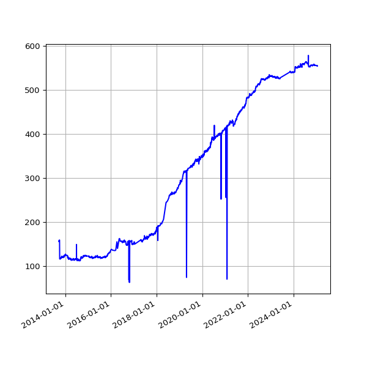

Organisation XML Files
Who is publishing IATI Organisation files?
Checking the IATI Registry for files that have iati-organisations as the root element. IATI Organisation files contain general information about the organisations in the delivery chain.
561 Publishers without an Organisation File
(J)Count of publishers without an organisation file, over time.
The following publishers do not have an organisation file listed on the IATI Registry.
- CARE Danmark Fonden for Frivillig Ulandsbistand
- 3F International
- International Initiative for Impact Evaluation
- Acid Survivors Foundation
- PATH
- Action Against Hunger USA
- ActionAid International
- Allergy and Asthma Institute Pakistan
- Aasaman Nepal
- Abt Associates Inc
- Accelerator Nepal
- Accountable Now
- Aceli Africa, Inc.
- ACTION AGAINST HUNGER SPAIN
- Asian Coalition for Housing Rights
- Association of Commonwealth Universities
- Acumen
- Africa Climate Ventures
- Akili Dada
- Adili Solar Hubs Limited
- Ajuda de Desenvolvimento de Povo para Povo (ADPP)
- Adventist Development and Relief Agency (ADRA Somalia)
- ADS-Nyanza
- AECOM
- Adaptation Fund
- Arab foundation for freedoms and equality
- AFEW International
- Afghanaid
- Stichting Aflatoun International
- African Parks Network
- African Revival
- Afrikagrupperna Sweden
- American Friends Service Committee
- AgDevCo
- Agroicone
- Alliance for Global Water Adaptation, Inc
- Administração de Infra-Estruturas de Águas e Saneamento
- AidData
- Stichting Aidenvironment
- Amnesty International UK Section Charitable Trust
- Asia Justice and Rights
- Al Majmoua
- Alcis Holdings Limited
- Alfalit
- All We Can (formerly Methodist Relief and Development Fund)
- Altai Consulting
- Amref Health Africa in Tanzania
- ANDA
- Association pour la Promotion de l'Education et de la Formation à l'Etranger
- African Population and Health Research Center
- Apollo Agriculture
- APOPO
- Aqua for All
- AIDS and Rights Alliance for Southern Africa
- ARK (Absolute Return for Kids)
- ARQ International
- African Security Sector Network
- African Tax Administration Forum
- Access to Medicine Foundation
- Access to Seeds Foundation
- Amref health Africa in Senegal
- African Women's Development Fund
- Arab Women Organization of Jordan
- British & Irish Agencies Afghanistan Group
- Babawatoto Centre For Children and Youth
- Bangladesh Business and Disability Network
- Bboxx
- Basil Energetics Private Limited
- BFA Global Kenya Ltd
- Bioclimate Research and Development
- Behavioural Insights Team
- West Africa Blue
- International Climate Initiative / BMU - IKI Secretariat
- Bangladesh Nari Progati Sangha
- BANQUE OUEST AFRICAINE DE DEVELOPPEMENT
- BOS+ tropen
- Bucks Community NGO
- Instituto BVRio
- Business Watch Indonesia
- C40 Cities Climate Leadership Group
- Coalition of African Lesbians (CAL)
- Camfed International
- Canon Collins Trust
- CARE Bangladesh
- Caritas Serbia
- CARPO - Center for Applied Research in Partnership with the Orient
- The Carter Center
- the center for victimized women and children
- Climate Bonds Initiative
- Centre For Citizens With Disabilities
- CDA Collaborative Learning Projects
- CDAC Network
- Center for International Studies and Cooperation
- Centre for Environment Human Rights and Development
- Coalition for Epidemic Preparedness Innovations
- Cesvi
- Coöperatief Climate Fund Managers U.A.
- Chance for Childhood
- Chemonics Group UK Ltd
- Association CHS Alliance
- Centre International de Développement et de Recherche
- Climate Investment Funds
- CINI
- Cambridge Institute for Sustainability Leadership
- Centre for Journalism Innovation and Development
- Red Cross Red Crescent Climate Centre
- Cobra Collective CIC
- CODA International
- City of London Corporation
- Concern Worldwide
- Concordis International
- Consortium of Reproductive Health Associations (CORHA)
- Construction Sector Transparency Initiative (CoST)
- Cowater UK Limited
- Center for Research, Evaluation Resources and Development (CRERD)
- Collective for Research and Training on Development Action
- Centre for the Study of Adolescence
- convention de la société civile ivoirienne
- CHEKA SANA TANZANIA
- Carbon Trust (Beijing) Consulting Limited
- Dalberg Catalyst
- Development Aid from People to People (DAPP) Malawi
- Dawuro Development Association
- D. Capital Partners
- Disability and Development Partners
- Devidayal Solar Solutions Private Limited
- Development Expertise Center
- Delivery Associates Ltd
- Stichting Deltares
- David Gordon Memorial Hospital
- DKT International
- Discovery Learning Alliance, Inc.
- Development Media International
- Dóchas - Irish Association of Non Governmental Development Organisations
- Development Organisation of the Rural Poor
- Direcção Provincial de Saúde de Nampula
- Down syndrome Foundation Nigeria
- Dushtha Shasthya Kendra
- University of Kinshasa
- Energy 4 Impact
- EABX
- Ecovega Enterprises
- Ecorys UK
- Education Cannot Wait
- Educate!
- The Education Commission
- Edukans Foundation
- EngenderHealth
- European Institute of Peace
- Elton John AIDS Foundation
- ELEVATE Hong Kong Holdings Limited
- Emissa
- Equatorial Power Limited
- Ethiopian Public Health Association
- Eve Organization for Women Development
- Ethiopian Women with Disabilities National Assocation
- Ethiopian Women Lawyers Association
- Fairfood International
- FairChain Foundation
- Frères des Hommes
- Freedom Forum
- Fondation Hirondelle
- Fight Hunger Foundation
- The Uganda Association of Women Lawyers ( FIDA Uganda)
- Field Ready, USA
- 50 Eight Limited
- Fiftyfifty
- International Indigenous Women Forum
- Canada Department of Finance / Ministère des Finances Canada
- Family Life Education Program
- FMO
- Germany - Federal Foreign Office
- Multilateral Investment Fund
- Fosera Solarsystems GmbH & Co. KG aA
- The Foundation Center
- Frontclear
- Forever Sabah
- FSD Africa
- Financial Sector Deepening Trust (Kenya)
- Financial Sector Deepening Uganda
- Fundacion Acceso
- Global Anaesthesia Development Partnerships
- GALZ
- Global Action Nepal
- Global Antibiotic Research and Development Partnership
- The Global Center on Adaptation
- Global Disability Innovation Hub
- GEF Secretariat
- Gender at Work
- Global Fund for Community Foundations
- Global Integrity
- The Global Initiative Against Transnational Organized Crime
- Girls Not Brides: The Global Partnership to End Child Marriage
- GlobalGiving.org
- Global Focus
- GHANA NETHERLANDS BUSINESS & CULTURE COUNCIL
- GOGLA - Global Off-Grid Lighting Association
- Global Partnership for Education
- Ground Truth Solutions
- GSMA Foundation
- The George Washington University
- Heartland Alliance International
- Huairou Commission
- Health Development Initiative
- Hope for Children
- Grand Challenges Canada
- Health Insurance Fund
- HM Treasury
- Higher Population Council
- Healthright International-Kenya
- HRWG Indonesia
- ImpactAssets Inc.
- Inter-American Development Bank
- International Bureau of Fiscal Documentation (IBFD)
- International Centre of Insect Physiology and Ecology (icipe)
- International Commission on Missing Persons
- InterClimate Network
- International Center for Not-for-Profit Law
- ICS
- International Center for Transitional Justice
- International Council of Voluntary Agencies
- International Campaign Women´s Right to Safe Abortion
- INTERNATIONAL DISABILITY ALLIANCE
- iDE
- IDH Investment Management B.V.
- IDOM INGENIERIA
- International Federation of Accountants
- International Federation of the Red Cross and Red Crescent (IFRC)
- International Institute for Environment and Development
- The International Institute for Strategic Studies
- ILGA Asia
- International Labour Organization (ILO)
- IMC WORLDWIDE
- International Monetary Fund
- Imfact Working Capital Solutions Limited
- Indigo Trust
- inHive
- INTERSOS Onlus
- INTRAC
- InvestInternational
- Institute of Psychiatry, Rawalpindi Medical University
- Innovations for Poverty Action
- Panos Institute West Africa (PIWA)
- Irrawaddy Policy Exchange
- IPE Global Limited
- International Peace Information Service
- IRC
- Irise International
- Initiative Sankofa d'Afrique de l'Ouest
- The Institute for Strategic Dialogue
- Institute for Security Studies
- ITECO - Centre de formation pour le développement
- IUCN Nederlands Comité
- International Women's Rights Action Watch Asia Pacific
- Interact Worldwide
- Just Associates
- Jeevika Trust
- Justice For All Prison Fellowship Ethiopia
- Jinja district union of persons with disabilities
- Jordan River Foundation
- Kadaster International
- Karuna Trust
- Kenya Private Sector Alliance
- Kerk in Actie
- kidasha
- Kathmandu Medical College Public Limited
- Kisumu Medical and Education Trust
- Karuna Mission Social Solidarity - KMSS
- Koninklijk Nederlands Meteorologisch Instituut
- King Salman Humanitarian Aid and Relief Centre
- The Kvinna till Kvinna Foundation - Head Office
- Innovate UK KTN
- The Legal Aid Forum
- Landell Mills
- Laterite B.V.
- London Business School
- Link Community Development Scotland
- Local Development and Small Projects Support
- LEAD International
- University of Leicester
- Lemann Foundation
- YMCA of Liberia
- Liga Internacional de Mujeres por la Paz y la Libertad - Limpal Colombia
- Lithuania, Ministry of Foreign Affairs
- Living Earth Foundation
- LIWA programme trust
- OurLoop Stitchting
- Linking Pin Africa Ltd
- living peace institute
- London School of Economics and Political Science
- LTS International Limited
- Luminate Foundation Inc.
- Spain - Ministry of Foreign Affairs and Cooperation
- Magariro
- The Mailman School of Public Health
- Malaria Consortium
- Mango Tree Property Management LTD
- MannionDaniels
- Marsa Sexual Health Center
- Mahila Sarvangeen Utkarsh Mandal, Pune, India
- Mercy Corps Global
- M&C Saatchi
- MDF Global
- Media Development Investment Fund
- Medicos del Mundo
- Doctors of the World (NL)/ Dokters van de Wereld
- MedAccess Guarantee Limited
- Memisa
- Mercy-USA for Aid and Development
- Micaia Foundation
- MADE in Europe
- The Palestinian Initiative for the Promotion of Global Dialogue and Democracy-MIFTAH
- Musalaha Ministry of Reconciliation
- Ministry of Foreign Affairs of Japan
- UK - Medical Research Council
- Medical Research Centre (MRC), Sierra Leone
- Sharkit Al Manhajyah Lelestsharat Al Tasweeqyeh
- The Global Forum on MSM & HIV (MSMGF)
- Mukisa Foundation
- Musawah Global Vision Berhad
- Asian-Pacific Resource and Research Centre for Women (ARROW)
- Environmental Centre for Oil Spills and Gas Flaring (NACGOND)
- National Coalition of Human Rights Defenders - Kenya
- Niger Delta Stakeholders Initiative for Community Development and Empowerment
- Network For Enterprise Enhancement and Development Support
- Neem Foundation
- Near East Foundation UK (NEF UK)
- NGO Federation of Nepal
- Netherlands Food Partnership
- Northern Ireland Cooperation Overseas Ltd
- Stichting Wilde Ganzen/ IKON
- NLR
- NLR Indonesia
- Netherlands Red Cross
- NKHOMA MISSION HOSPITAL
- Northern Network for Education Development
- NORSAAC
- Natural Resource Governance Institute (NRGI)
- Enroot
- Northern Rangelands Trust
- Neotree
- Nuffic
- Nutrition International
- National Union of Women With Disabilities of Uganda
- Netherlands Water Partnership
- ODI Global
- ODI Global Advisory Ltd
- OECD
- The OPEC Fund for International Development (OFID)
- Opportunity International Savings and Loans Ltd
- Okapi Consulting
- Olamma Cares Foundation
- Omidyar Network Fund Inc.
- openmindedly
- Opportunity International UK
- Oxfam India
- Programming Their Future
- The Princess Alia Foundation
- Paradigm Initiative
- Particip GmbH
- Partnership for African Social & Governance Research (PASGR)
- PATTIRO
- Peace Brigades International
- Prince Claus Fund
- Peace Direct
- PEAS (Promoting Equality in African Schools)
- Pegasys Limited
- Yayasan PEKKA
- People In Aid
- Pastoralist Girls Initiative
- Public International Law & Policy Group
- People in Need
- Projet Jeune Leader
- Plan International UK
- Plan International USA
- Plan International Finland
- Soluciones en Legislación y Política Ambiental AC
- PONT
- PPAG
- Penal Reform International
- PRI Association
- Asociación Profamilia
- Population Services Kenya
- Positive Vibes Trust
- PwC
- Palestinian Working Women Society for Development
- Rabo Partnerships
- Rabo Foundation
- Rainforest Alliance
- RAIN Foundation (former)
- Royal Botanic Gardens Kew
- Railway Children Africa
- Royal College of General Practitioners (RCGP)
- Royal College of Obstetricians & Gynaecologists
- Rehabilitation, Education and Community Health (REACH)
- READ Foundation
- Stichting Red een Kind
- RedOrange Media and Communications
- Resource Extraction Monitoring
- Restart Center
- Radio La Benevolencija
- Universiti Malaya
- Rene Moawad Foundation
- Stichting RNW Media
- Rights and Resources Initaitive
- Royal Society for the Protection of Birds
- Red Umbrella Fund
- Netherlands Enterprise Agency (RVO)
- Send a Cow Kenya
- Southern African Catholic Bishops' Conference Aids Office
- The Salvation Army International Development UK
- The Samdhana Institute
- South African Network of People who Use Drugs
- Small Arms Survey
- Satellite Applications Catapult Ltd
- Savana Signatures
- South Asian Women Development Forum
- Solar Cooling Engineering GmbH
- Save the Children International
- UK - Scottish Government
- Save the Children UK
- Stakeholder Democracy Network
- SDSN Association, Inc.
- Sehat Kahani (Community Innovation Hub)
- Sociaal-Economische Raad
- Social Fund for Development, Yemen
- Sustainable Hospitality Alliance
- Shirkat Gah-Women's Resource Centre
- Special Hope Network
- Shortlist Professionals Limited
- Shtrii Shakti
- Slovenia - Ministry of Foreign Affairs
- Silsab Foundation
- Sisonke National Sex Workers Movement
- Samir Kassir Foundation
- Social Accountability International
- Solidaridad
- Solidaridad Europe
- Solidaridad South & South-East Asia
- Solidaridad West Africa
- Stichting Onderzoek Multinationale Ondernemingen (SOMO)
- SOS Children's Villages Kenya
- SOS Børnebyerne
- SOS Jeunesse et Défis
- SOS Children's Villages The Netherlands
- SOS Sahel International UK
- SOS Italia
- Sowt podcasting and training L.L.C
- Synergie des Femmes pour la Paix et la Réconciliation des Peuples des Grands Lacs d'Afrique
- Leaders of Tomorrow
- Syria Relief
- Support Trust for Africa Development (STAD)
- STAR-Ghana Foundation
- STC International
- Hivos
- Stellenbosch University
- Survivors Fund (SURF)
- Smart Villages Research Group
- Trust for Africa's Orphans
- Global Alliance for TB Drug Development
- The Coca-Cola Export Corporation
- Terre des Hommes Netherlands
- Teach For Pakistan
- Triangle Génération Humanitaire
- The Hague Academy for Local Governance
- Foundation for Social Improvement
- The MENTOR Initiative
- The Power of Nutrition
- The British Academy
- Nairobi Climate Network
- The Faraday Institution
- Transparency International UK
- Transition International
- Timidria
- Tameer-e-Khalaq Foundation
- The Leprosy Mission Nepal
- TRAIDE Foundation
- Transform Africa
- transforma
- Transparency International Secretariat
- Transparently Lebanese
- Triggerise Ethiopia
- Triple Line
- Trocaire
- TrustAfrica
- Timber Trade Federation Ltd.
- Twitezimbere
- Universidad de los Andes
- Romania Ministry of Foreign Affairs
- University College London
- University of Dar es Salaam
- University of Ghana
- UK-Med
- Unilever
- Chama cha Uzazi na Malezi Bora Tanzania (UMATI)
- United Nations Capital Development Fund
- United Nations Development Coordination Office
- United Nations Educational, Scientific and Cultural Organization (UNESCO)
- United Nations Population Fund
- UN Global Compact Local Network UK
- UN-Habitat
- University of Nottingham
- UNICEF Netherlands National Committee
- OCHA Country Based Pooled Funds
- United Nations Office for Project Services (UNOPS)
- UN Pooled Funds
- University of Dundee
- University of York
- University Putra Malaysia
- University of Amsterdam
- Unie van Waterschappen
- The University of the West of England, Bristol
- UWEZO Youth Empowerment
- United World Schools
- VEI B.V.
- Vera Solutions
- Voluntary Health Association of India
- Village Infrastructure Angels
- World Association for Christian Communication (UK)
- Women's Action Group
- Wala Ltd
- WAPA International ASBL
- Water Witness International
- Wayamo Foundation
- World Bank Trust Funds
- War Child Canada
- Welsh Centre for International Affairs
- Women's Centre for Legal Aid and Counselling
- War Child UK
- Women Engage for a Common Future
- We Effect
- World Economic Forum Geneva
- World Education Inc.
- Stichting Wings For Aid Foundation
- World Federalist Movement - Institute for Global Policy
- Women for Women International (UK)
- Women's Global Network on Reproductive Rights
- Worldwide Hospice Palliative Care Alliance
- WILPF
- Water & Land Resource Center
- WNF Wereld Natuur Fonds
- Women's Legal Resources Centre
- World Young Women's Christian Association
- World Relief Corp of National Association of Evangelicals
- World Waternet
- Women Peacemakers Program
- Grand Bargain Test
- Windle Trust Kenya
- World Vision Zimbabwe
- We World - GVC Onlus
- WWF Sweden
- World Wildlife Fund Inc, Bolivia Program Office
- World Wide Fund for Nature Zambia
- Young Africa International HUB
- Youth Business International
- Youth Development Labs Inc
- YWCA of Bangladesh
- Young Women Christian Association of South Sudan (YWCA SS)
- YY Ventures
- Zing
- Zambia Orphans Aid UK